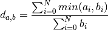

Naming Conventions¶
Input Readers¶
sobel¶
Extracts the luminance value like in the luma reader and applies a sobel filter.
canny¶
Extracts the luminance value like in the luma reader and applies a canny filter.
Feature Extractors¶
mean¶
Subdivides the curvelet response image  for each scale
for each scale  and angle into grid cells of approximately equal size:
and angle into grid cells of approximately equal size:
It then calculates the mean and standard deviation in each grid cell and stores the results as the feature vector:
pmean¶
Subdivides the curvelet response into grid cells and calculates the means as in mean. It then slides a window of size across it, producing
![\bar{C}_{s,\alpha} =
\begin{pmatrix}
mean(G_{s,\alpha,1,1}) & mean(G_{s,\alpha,1,2}) & \cdots & mean(G_{s,\alpha,1,n}) \\
mean(G_{s,\alpha,2,1}) & mean(G_{s,\alpha,2,2}) & \cdots & mean(G_{s,\alpha,2,n}) \\
\vdots & \vdots & \ddots & \vdots \\
mean(G_{s,\alpha,n,1}) & mean(G_{s,\alpha,n,2}) & \cdots & mean(G_{s,\alpha,n,n}) \\
\end{pmatrix} =
\begin{pmatrix}
\bar{c}_{s,\alpha,1,1} & \bar{c}_{s,\alpha,1,2} & \cdots & \bar{c}_{s,\alpha,1,n} \\
\bar{c}_{s,\alpha,2,1} & \bar{c}_{s,\alpha,2,2} & \cdots & \bar{c}_{s,\alpha,2,n} \\
\vdots & \vdots & \ddots & \vdots \\
\bar{c}_{s,\alpha,n,1} & \bar{c}_{s,\alpha,n,2} & \cdots & \bar{c}_{s,\alpha,n,n} \\
\end{pmatrix}](../_images/math/d869a1174dbeea7a0c95ecd4b775b23941045e67.png)

and stores the stacked mean submatrices as the feature vectors:
pmean2¶
TBD
metrics¶
mean_l2¶
TBD
mean_sel_l2¶
TBD
hist¶
Calculates the distance  between two images’ signatures and using the histogram intersection:
between two images’ signatures and using the histogram intersection:
